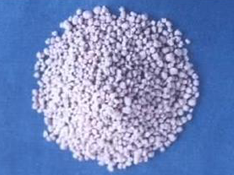

- 沈丕安提示：
- 红斑皮疹有皮肤的荨麻疹，这是潜在表皮的，也有血管因素造成的红斑皮疹，最严重了，大部分都是免疫病，有结节性红斑、白塞氏病红斑、狼疮性红斑、皮节性红斑，各种各样的红斑都是血管因素造成的，不是很好治，不像皮肤过敏，这是血管炎，是自身免疫系统造成的血管炎，这样的话我们也得治疗。
- 有一个女同志脸上生了那么多红斑，夏天还戴着口罩，走不出去，她急需要把这个红斑解决掉。很多人就愿意宁可吃激素的，吃激素以后呢，脸发大了，但红斑退得很快，但它还会反跳。所以治疗红斑中医的效果是不错的。比如我的红斑汤，生地、生石膏、忍冬藤之类的药在一起都能起到效果。
- 主药介绍：
- 1、生地（详见“小小生地黄 紫癜消褪掉”）
- 2、生石膏 【别名】处方名：生石膏、熟石膏。

生石膏
生石膏
【来源】硫酸盐矿物石膏的矿石。
【性味与功效】味辛、甘，性寒。生石膏清热降温，生津止渴；熟石膏清热、收敛、生肌。
【传统应用】主治热病，壮热不退，口渴烦躁，脉洪大；温病高热，身发斑疹；胃火亢盛，牙龈肿痛，口臭；风热袭肺，高热咳喘。煅石膏用于皮肤溃烂，久不收口。
【传统方剂】
（1）白虎汤《伤寒论》：生石膏、知母、粳米、甘草，治疗阳明病壮热、口大渴。
（2）玉女煎《景岳全书》：熟地、生石膏、麦冬、知母、牛膝。治疗热病口渴、头痛、牙痛。
（3）三黄石膏汤《伤寒六书》生石膏、黄连、黄芩、黄柏、栀子、麻黄、豆豉、生姜、大枣、细茶，治疗高热无汗、烦燥等症。
在著名方剂竹叶石膏汤，麻杏石甘汤、大青龙汤、木防己汤中，石膏也是重要的药物。